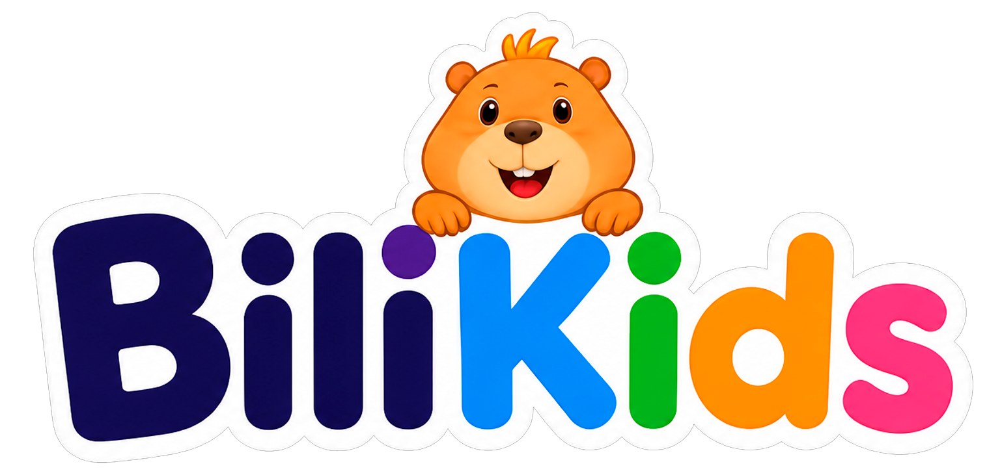

Junte-se ao Bili em uma jornada mágica pelo inglês. Toque, brinque e descubra um mundo de diversão.
Descubra novas aventuras e histórias divertidas!
Faça login pra ver o que já está liberado pra você.
Faça login com o e-mail usado na compra pra ver seus dados e assistir aos vídeos.
Dúvidas ou problemas com os materiais?
💬 Falar com o suporteNão foi possível carregar o player 😢